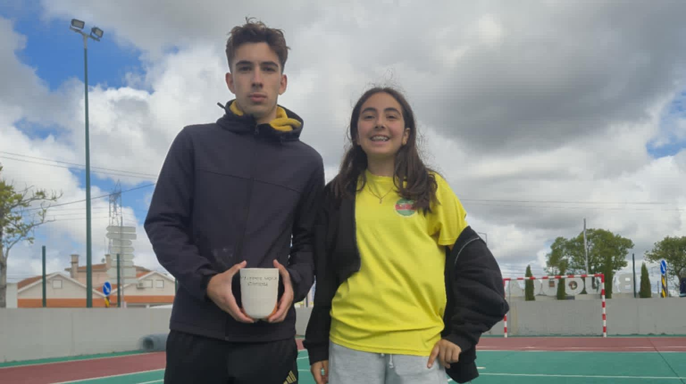

Na prova principal de 10km, Emanuel Cardoso, conquistou o 4º lugar da geral e o 1º lugar em M35.
Nos 5km, David Dinis, foi o 2º júnior a cortar a meta.
Diana Dinis arrecadou um ótimo 5º lugar em infantis.

Este domingo, decorreu o 34º Grande Prémio de Atletismo Bajouca.

Na prova principal de 10km, Emanuel Cardoso, conquistou o 4º lugar da geral e o 1º lugar em M35.
Nos 5km, David Dinis, foi o 2º júnior a cortar a meta.
Diana Dinis arrecadou um ótimo 5º lugar em infantis.
